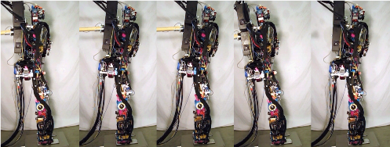

projects
Table of Contents
- DARPA Robotics Challenge Egress Control
- Integrated Modular Avionics System
- Biped Walking Control using an Optimal Trajectory Library
- Standing Balance Control using an Optimal Trajectory Library
- Roboray Humanoid Robot System Design
- Biped Walking Control
- Biped Skating Control
- Small Humanoid Robot System Development
- Motor Control System Development
- Sensorimotor Coordination Research
- GPU Design
- Embedded Active Vision System Development
- Short-term Ship Motion Prediction
DARPA Robotics Challenge Egress Control

The DARPA Robotics Challenge, Carnegie Mellon University, Pittsburgh, 2013-2015
- Full-body motion planning and control
- The egress task
Integrated Modular Avionics System

China's C919 project, GE Aviation and Aviage Systems, Ltd., 2011-2013
- Integrated Modular Avionics (IMA) system design
- High integrity ADN (Advanced Data Networks) design
- ADN switch configuration tool and analysis tool design
Biped Walking Control using an Optimal Trajectory Library
Control using an optimal trajectory library, PhD Thesis, SJTU, 2006-2011
- Trajectory-based dynamic programming
- Trajectory optimization and policy optimization
- Application to tasks with an equilibrium state (standing balance control)
- Application to tasks with a limit cycles (walking control)
Standing Balance Control using an Optimal Trajectory Library

Standing Balance Control Using an Optimal Trajectory Library
Roboray Humanoid Robot System Design

Roboray humanoid robot system development, Carnegie Mellon University, Samsung, Ltd. and SeeGrid, ltd.
- Sensor calibration
- Filter design
- Balance controller development
Biped Walking Control

Biped walking control, Shanghai Jiao Tong University, 2007
- ZMP-based walking control
- LIMP-based walking control
Biped Skating Control

Biped skating control, Shanghai Jiao Tong University, 2007
Small Humanoid Robot System Development

Small humanoid robot system development, Shanghai Jiao Tong University, 2006-2008
- Motion control system (HW/SW) design and implement
- ZMP-based walking control implement
Motor Control System Development
Motor control system development, Shanghai Jiao Tong University, 2007-2008
- 6 DoFs control (more DoFs than off-the-shelf products of the same size)
- High precision speed/position control
- 6 DoFs coupling control
Sensorimotor Coordination Research

Sensory-motor coordination research, Shanghai Jiao Tong University, 2006-2007
- Basic behavior acquisition with multisensor integration.
- This research enables a robot to emerge a behavior controller based on its interaction with the environment without specific programming.
GPU Design

Graphic Processing Unit logic design, S3 graphics, Inc., 2003-2006
- H.264 Video Decoder Development
- Multiple Graphic Processing Unit Support Techniques Development
- Bus Interface Development
Embedded Active Vision System Development
Active vision system development, Shanghai Jiao Tong University, 2001-2003
- Fast moving object tracking @ 50 Hz:
- Real-time image processing with TI C6000 floating point DSP
- Real-time display
- Real-time 2-DoFs pan-tilt camera system control
Short-term Ship Motion Prediction

Short-term ship pose prediction algorithm and software development, Harbin Engineering University and China Ship Scientific Research Center, 2001